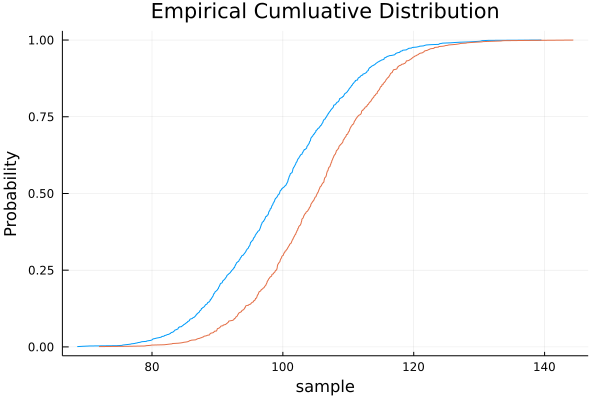

Kolmogorov-Smirnov Test
Kolmogorov-Smirnov test is a test of the equivalence of two distributions. The test is based on finding the maximum separation between the two cumulative distribution functions (CDF) and determining the p-value of the test statistic. The HypothesisTests package has ApproximateTwoSampleKSTest which does this, but, unfortunately, it doesn't tell us the location of maximum separation.
For binary classifiers, the predicted probabilities of the two classes should be different, thus the interest isn't whether the probability distributions are different, rather, it is how large is the maximal separation and where does it occur.
Let's generate some data to illustrate the idea.
using Plots
using Random
using Distributions
Random.seed!(123)
n100 = rand(Normal(100, 10), 1000)
n105 = rand(Normal(105, 10), 1000)
n120 = rand(Normal(120, 10), 1000)
n140 = rand(Normal(140, 10), 1000)Closely spaced distributions
histogram(n100, nbins = 50, opacity= 0.3)
histogram!(n105, nbins = 50, opacity= 0.3, legend = nothing)
We can view their empirical culumative distribution function as follows:
function viewcdf(pl, v)
len = length(v)
pl(sort(v), (1:len) ./ len,
xlabel = "sample", ylabel = "Probability",
title = "Empirical Cumluative Distribution", legend = nothing)
end
viewcdf(plot, n100)
viewcdf(plot!, n105)
ROCKS provides a kstest function to find the maximum separation and its location. The required input is a vector designating the two classes and another vector of the values, this is the typical data structure of model scoring on development or validation data.
using ROCKS
cls = [fill(0, length(n100)); fill(1, length(n105))]
values = [n100; n105]
kstest(cls, values)(n = 2000, n1 = 1000, n0 = 1000, baserate = 0.5, ks = 0.22299999999999998, ksarg = 103.9435379067069, ksdep = 0.4575)
kstest returns results in a named tuple:
n, total number of observationsn1, total number of observations in class 1n0, total number of observations in class 0baserate, n1 / n, the incidence rate of class 1ks, the maximum separation between CDF1 and CDF0, a value between [0, 1]ksarg, argmax, the value where maximum separation is achievedksdep, depth of argmax in the sorted values (default sort is from high to low)
ks of 0 means the distributions are indistinguishable, ks of 1 says the two distributions are complete separable. These two distributions have small separation since they are drawn from distributions with large overlap.
Moderately separated distributions
We now test on moderate separation:
histogram(n100, nbins = 50, opacity= 0.3)
histogram!(n120, nbins = 50, opacity= 0.3, legend = nothing)
cls = [fill(0, length(n100)); fill(1, length(n120))]
values = [n100; n120]
kstest(cls, values)(n = 2000, n1 = 1000, n0 = 1000, baserate = 0.5, ks = 0.6779999999999999, ksarg = 110.85777553733867, ksdep = 0.485)
There's considerable separation between the classes, and ks is larger than before.
Widely separated distributions
Let's test on widely separately data:
histogram(n100, nbins = 50, opacity= 0.3)
histogram!(n140, nbins = 50, opacity= 0.3, legend = nothing)
cls = [fill(0, length(n100)); fill(1, length(n140))]
values = [n100; n140]
kstest(cls, values)(n = 2000, n1 = 1000, n0 = 1000, baserate = 0.5, ks = 0.949, ksarg = 121.57678388253254, ksdep = 0.4955)
We can see that the two classes are nearly separable and ks is now quite high at 0.949. These examples illustrate how ks can serve as an indicator of the ability to separate the two classes.